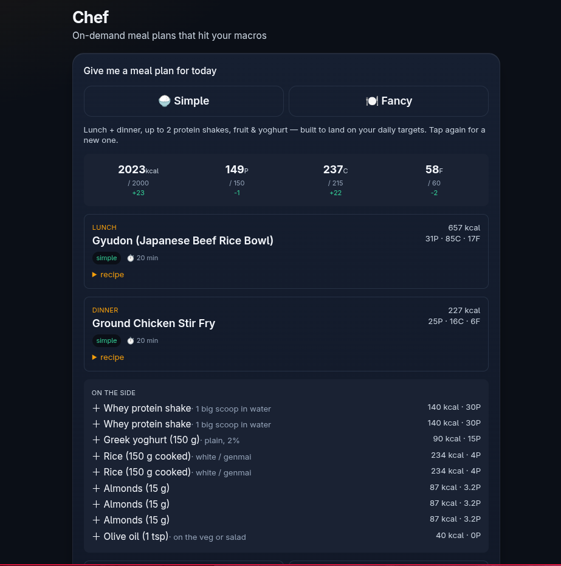
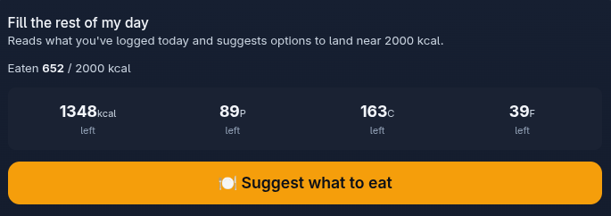
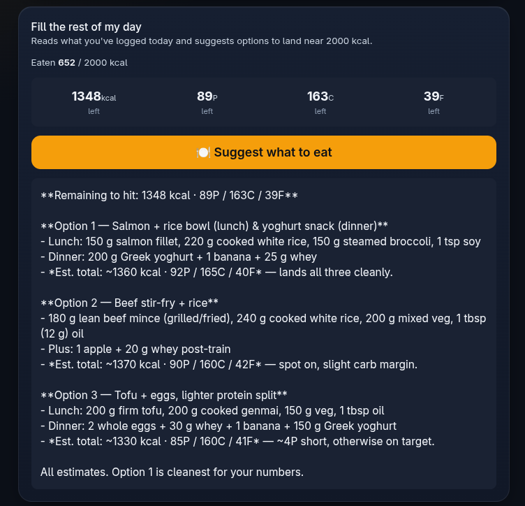
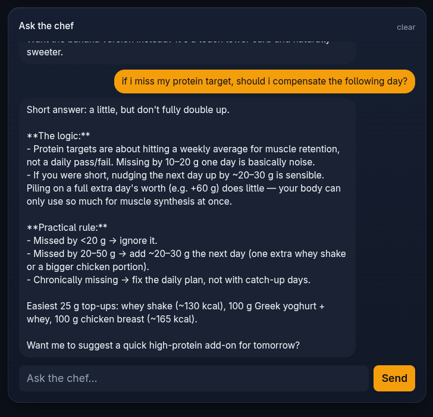

Chef is one tab of Fit, a self-hosted fitness app that tracks a diet and training plan. The rest of the app knows the day's targets: calories, protein, fat and carbs. Chef turns those numbers into actual food, so the question "what do I eat today?" never has to be answered from scratch.
It does three jobs, shown below in the order they appear on the page. One is pure arithmetic over a recipe library. The other two hand the arithmetic to an AI and let it do the talking.
Builds a whole day, lunch and dinner plus sides, that lands on the targets. Two taps: Simple or Fancy.
No AI · deterministicReads what has already been eaten today, works out what is left, and suggests three ways to finish the day.
AI, grounded in the mathsA chat with a cook who knows the targets, the staple foods and what a Japanese supermarket stocks.
AI, with a personaTap Simple or Fancy and a full day appears a moment later. No AI is involved here. The plan comes from a library of 89 recipes and a handful of fixed side items, assembled by a small scoring routine.
Lunch is always drawn from the quick recipes, because lunch on a work day has to be quick. Simple draws dinner from the same quick pool. Fancy draws dinner from the recipes that take more effort, for an evening when cooking is the point.

| Item | Role | kcal | Protein | Carbs | Fat | Max per day |
|---|---|---|---|---|---|---|
| Whey protein shake, one big scoop in water | protein | 140 | 30 g | 4 g | 2 g | 2 |
| Greek yoghurt, 150 g plain 2% | protein top-up | 90 | 15 g | 6 g | 4 g | 1 |
| Rice, 150 g cooked, white or genmai | carbs | 234 | 4 g | 56 g | 0 g | 2 |
| Banana, berries (150 g) or apple | carbs | 85–105 | 0–1 g | 20–27 g | 0 g | 2 |
| Almonds, 15 g | fat floor | 87 | 3 g | 3 g | 7.5 g | 4 combined |
| Olive oil, 1 tsp on the veg or salad | fat floor, small step | 40 | 0 g | 0 g | 4.5 g |
For the more common situation: it is mid-afternoon, lunch is already in the diary, and the question is what dinner needs to be to finish the day on target.

The card reads today's food log and shows what is left of each target: calories, protein, carbs and fat. If a number has gone negative it flips to over and turns orange. This part is plain arithmetic and works whether or not the AI is configured.
Tapping Suggest what to eat sends the AI a tightly written brief: the daily targets, the list of what has been eaten with its macros, the totals so far, and the exact remaining numbers. It is asked for three distinct options, each with specific metric amounts and an estimated total, and told to say in one line if an option cannot hit every macro.

Free-form chat. "How do I make this?", "What can I do with chicken and rice?", "Is there a swap for the salmon?" The answers are short and come with macros attached.
The AI is given a persona and a set of standing instructions before every message. In short: a practical, upbeat personal chef for someone who is busy, wants tasty, simple, varied food, and is currently cutting.
Current body weight, the diet phase, the day's four targets, and that a recipe library of 89 dishes exists in the app. It also knows the eating pattern: breakfast skipped, lunch and dinner the two meals, dinner the bigger one, training around six in the evening.
The conversation is stored, so follow-up questions work ("make that spicier", "and without the rice?"). The clear link at the top of the card wipes it and starts fresh.

A deliberate split. Anything that must be exactly right is computed by the app. The AI is only ever asked to choose foods and write sentences around numbers it has been handed.
| Job | Done by | Why |
|---|---|---|
| Daily targets (calories, protein, fat, carbs) | The app, from the current diet block | They are the plan. Nothing in Chef can change them. |
| Building a day from the recipe library | The app, scoring routine | Repeatable, instant, and it never invents a recipe or a macro. |
| What is eaten so far and what is left | The app, from the food diary | The remaining numbers must be correct before anyone reasons about them. |
| Suggesting food for the rest of the day | AI (Claude), given the exact numbers | Choosing tasty combinations and scaling portions is what a language model is good at. |
| Cooking questions, swaps, recipes | AI (Claude), with the chef persona | Open-ended, and the answers are advice, not records. |
| Writing a plan into the diary | The app, on "Log this day" | Only a tap commits anything. Nothing is logged automatically. |
The AI calls go straight to the Anthropic API from the app's own server, with the model set to run at low effort. That keeps each answer cheap and quick, which is right for meal suggestions. If no API key is configured, the page says so, and Tool 1 and the arithmetic in Tool 2 keep working without it.
Eighty-nine high-protein recipes, each with calories, macros, prep time, servings, ingredients and a numbered method. They were gathered from a personal recipe collection and loaded into the app as data, not scraped at run time.
Protein sources, which the planner uses to keep lunch and dinner different:
The whey-based entries are mostly breakfasts, bars and shakes. They are in the library for "Ask the chef" to draw on but are not used as mains by the planner.
Japan notes. The app is used in Japan, so each recipe was checked against what a normal supermarket there stocks. Twenty-four carry a substitution note (ground turkey is hard to find, use chicken or beef and fresh chilli; that kind of thing). Ten are flagged as impractical and are excluded from the planner altogether, though they remain readable.
Some of the Japanese dishes in the library: Gyudon, Oyakodon, Teriyaki Salmon Bowls, Miso Salmon, High Protein Mapo Tofu, Korean Ground Beef with gochujang, Shrimp Poke Bowl, Air Fryer Teriyaki Chicken.